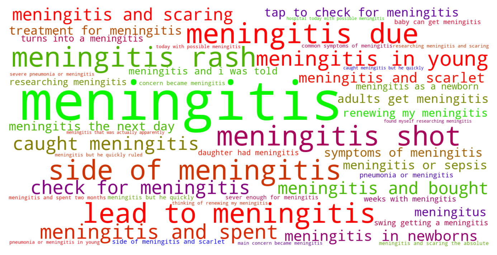
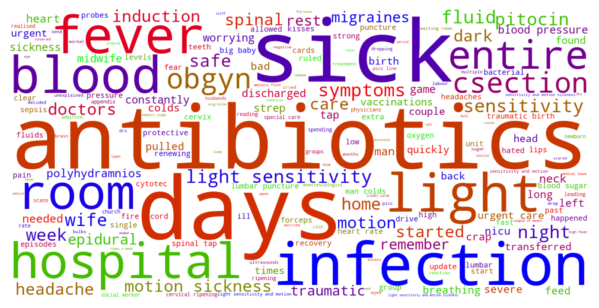

Jump to section:
Samples from Social CorpusHits per UMLS Alias on Social Corpus
Word Cloud Comparison
Embedding Space Comparison
Nearest Neighbors by Semantic Type
Related Analysed Concepts
Samples from Social Corpus
Vaccinations were : 6-in-1 vaccine , given as a single jab containing vaccines to protect against six separate diseases : diphtheria ; tetanus ; whooping cough ( pertussis ) ; polio ; Haemophilus influenzae type b , known as Hib , a bacterial infection that can cause severe pneumonia or meningitis in young children ; and hepatitis B Pneumococcal ( PCV ) vaccine Rotavirus vaccine - given orally MenB vaccine Any and all advice appreciated !
Confidence: 0.577. Reddit link
Then he chastised us for going in because as he said " you're too old for meningitis " which is 100 % bull , adults get meningitis too .
Confidence: 0.690. Reddit link
At one point , they thought he was having seizures and could have meningitis and i was told that he could die .
Confidence: 0.690. Reddit link
Before one of the infections goes septic , or turns into a meningitis .
Confidence: 0.690. Reddit link
My boy is in the NICU with viral meningitis .
Confidence: 1.000. Reddit link
I'm also thinking of renewing my meningitis .
Confidence: 0.598. Reddit link
It's scary when you're exposed to illnesses My stepdad was admitted into the hospital today with possible meningitis .
Confidence: 0.506. Reddit link
Fluid was clear so the infection hadn't lead to meningitis .
Confidence: 0.816. Reddit link
Feeling scared atm , his blood cultures came back positive for a blood infection , and they've just done a lumbar puncture to test for meningitis .
Confidence: 1.000. Reddit link
It went misdiagnosed for three months and eventually turned into Lyme meningitis .
Confidence: 1.000. Reddit link
Hits per UMLS Alias on Social Corpus
-
meningitis
91 hits
-
inflammation meninges
0 hits
-
meningitides
0 hits
-
meningitis unspecified cause
0 hits
-
meningococcal infection
0 hits
-
meningitis disorder
0 hits
-
meningitis unspecified
0 hits
-
meningitis nos
0 hits
Word Cloud Comparison
Keywords matching C0025289
Keywords matched against concept. Word size represents frequency.
Keywords co-occurring with C0025289
Co-occurrence is measured at the document-level (i.e. Reddit submissions). Frequencies are normalized to account for keywords common to all CUIs.
Embedding Space Comparison
T-SNE comparison for word embeddings learned from medical domain (EuroPMC) and social media (Reddit) independently.
Pearson correlation for union of closest 1000 neighbors: 0.012
Nearest Neighbors by Semantic Type
Most similar concepts in each of the selected UMLS semantic types. Based on concept embeddings from social corpus.
T047 (Disease or Syndrome)
-
C0025289
Meningitis
1.000 Similarity
-
C0036690
Sepsis
0.743 Similarity
-
C0042769
Viral infection
0.737 Similarity
-
C0042384
Vasculitis
0.726 Similarity
-
C0276527
Aids with pneumonia
0.713 Similarity
-
C0040425
Tonsillitis
0.704 Similarity
-
C0019158
Hepatitis
0.700 Similarity
-
C0010692
Bladder infection
0.698 Similarity
T005 (Virus)
-
C0086776
Parvovirus
0.691 Similarity
-
C0205939
Cold virus common
0.637 Similarity
-
C0035236
Rsv
0.631 Similarity
-
C0205676
T viruses
0.620 Similarity
-
C3605735
Nanay virus
0.615 Similarity
-
C4433204
King virus
0.602 Similarity
-
C0042776
Virus
0.599 Similarity
-
C5058350
Fairfax lookout virus
0.584 Similarity
T046 (Pathologic Function)
-
C0007642
Cellulitis
0.663 Similarity
-
C3714514
Infections
0.646 Similarity
-
C0269810
Sepsis during labor
0.645 Similarity
-
C0043241
Infection wound
0.625 Similarity
-
C0393391
Infection after injection
0.616 Similarity
-
C0001122
Acidosis
0.595 Similarity
-
C4075684
Hypoxemia during surgery
0.593 Similarity
-
C0034065
Pulmonary embolism
0.588 Similarity
T019 (Congenital Abnormality)
-
C0152021
Congenital heart disease
0.610 Similarity
-
C0000768
Birth defect
0.602 Similarity
-
C0266449
Brain malformation
0.580 Similarity
-
C0027794
Neural tube defect
0.576 Similarity
-
C0149530
Congenital heart block
0.569 Similarity
-
C0019555
Dislocated hip since birth
0.551 Similarity
-
C0025958
Microcephaly
0.545 Similarity
-
C0018798
Heart defect
0.545 Similarity
T184 (Sign or Symptom)
-
C0235031
Neurological symptoms
0.596 Similarity
-
C0015967
Fever
0.590 Similarity
-
C0847014
Rash fever
0.573 Similarity
-
C0392171
Flu like symptoms
0.571 Similarity
-
C0740903
Allergic symptoms
0.541 Similarity
-
C0085594
Fever chills
0.529 Similarity
-
C4042866
Flareup symptom
0.525 Similarity
-
C0849791
Sinus drainage
0.522 Similarity
T190 (Anatomical Abnormality)
-
C0016169
Sinus
0.594 Similarity
-
C4025734
Anomaly scalp
0.505 Similarity
-
C0019294
Inguinal hernia
0.472 Similarity
-
C0019270
Hernia
0.467 Similarity
-
C0240063
Keyhole iris
0.442 Similarity
-
C0332447
Anomaly
0.438 Similarity
-
C0149952
Ovary torsion
0.419 Similarity
-
C3887590
Stricture ureter
0.413 Similarity
T061 (Therapeutic or Preventive Procedure)
-
C0547605
Infection prevention
0.592 Similarity
-
C0282638
Prescription prophylactic antibiotic
0.564 Similarity
-
C0199779
Antibiotics injection
0.533 Similarity
-
C2114838
Prophylactic antibiotics prescribed
0.532 Similarity
-
C0042203
Pertussis vaccination
0.528 Similarity
-
C0920687
Cancer care
0.523 Similarity
-
C0042200
Flu vaccination
0.510 Similarity
-
C0040590
Tracheotomy
0.508 Similarity
T195 (Antibiotic)
-
C0003232
Antibiotics
0.587 Similarity
-
C0002645
Amoxicillin
0.559 Similarity
-
C0718575
Antibiotics ear
0.547 Similarity
-
C0013090
Doxycycline
0.509 Similarity
-
C0030842
Penicillin
0.505 Similarity
-
C0279516
Antibacterial
0.483 Similarity
-
C0723285
Septa
0.477 Similarity
-
C0718950
Biomox
0.401 Similarity
T037 (Injury or Poisoning)
-
C0160420
Kidney injury
0.579 Similarity
-
C0332666
Injuries old
0.541 Similarity
-
C0270611
Brain damage
0.520 Similarity
-
C0033119
Pricks
0.505 Similarity
-
C0686721
Baby shaken
0.489 Similarity
-
C0161479
Nerve damage
0.487 Similarity
-
C3826308
Fractures children
0.483 Similarity
-
C0004601
Back injury
0.481 Similarity
T059 (Laboratory Procedure)
-
C0430402
Bacterial cultures
0.577 Similarity
-
C0580327
Antibodies test
0.529 Similarity
-
C0368676
Antibody screen
0.523 Similarity
-
C0018941
Blood test
0.504 Similarity
-
C0430400
Culture general
0.502 Similarity
-
C0023508
White blood cells
0.493 Similarity
-
C0200949
Blood cultures
0.487 Similarity
-
C0038577
Drug tested
0.483 Similarity
T023 (Body Part, Organ, or Organ Component)
-
C0225730
Left lung
0.572 Similarity
-
C0024204
Lymph nodes
0.568 Similarity
-
C0229889
Lymphatic
0.566 Similarity
-
C0024109
Lung
0.565 Similarity
-
C0580788
Tonsils adenoids
0.553 Similarity
-
C0588054
Lymph nodes neck
0.546 Similarity
-
C0034052
Pulmonary arteries
0.532 Similarity
-
C0545792
Kidney liver
0.521 Similarity
T201 (Clinical Attribute)
-
C0012655
Predisposition
0.569 Similarity
-
C0231832
Breathing rate
0.456 Similarity
-
C0005516
Marker
0.421 Similarity
-
C0277853
Placed reactions
0.404 Similarity
-
C0429622
Oxygen supply
0.393 Similarity
-
C0521982
Successful treatment
0.388 Similarity
-
C0035234
Breathing sound
0.383 Similarity
-
C1519453
Spiculation
0.377 Similarity
T060 (Diagnostic Procedure)
-
C0920688
Cancer diagnosis
0.557 Similarity
-
C0596473
Detection early
0.521 Similarity
-
C0004398
Autopsy
0.514 Similarity
-
C1882082
New diagnosis
0.509 Similarity
-
C0195324
Cone biopsy
0.498 Similarity
-
C0033053
Prenatal diagnoses
0.485 Similarity
-
C0011900
Diagnosed
0.484 Similarity
-
C0199230
Screening
0.484 Similarity
T048 (Mental or Behavioral Dysfunction)
-
C0233705
Fear getting cancer
0.555 Similarity
-
C0338927
Hospitalism
0.530 Similarity
-
C0236792
Aspergers disease
0.522 Similarity
-
C0036857
Severe mental handicap
0.514 Similarity
-
C0349245
Hysterical fit
0.494 Similarity
-
C0004352
Autism
0.487 Similarity
-
C0003635
Apraxia
0.482 Similarity
-
C1306341
Mental disability
0.480 Similarity
T101 (Patient or Disabled Group)
-
C0008098
Child hospitalized
0.555 Similarity
-
C1456639
Living with cancer
0.502 Similarity
-
C1516213
Cancer patient
0.489 Similarity
-
C0682161
Dually diagnosed
0.484 Similarity
-
C0871503
Dying patients
0.483 Similarity
-
C0683995
Drug exposed child
0.477 Similarity
-
C0039552
Ill terminally
0.473 Similarity
-
C0260101
Sick child
0.459 Similarity
T049 (Cell or Molecular Dysfunction)
-
C1705285
Mutated
0.538 Similarity
-
C0544885
Stop gain
0.489 Similarity
-
C0008628
Del
0.473 Similarity
-
C4725191
Stop lost
0.465 Similarity
-
C0002938
Aneuploidy
0.436 Similarity
-
C0008625
Chromosomal abnormality
0.426 Similarity
-
C1442161
Deletion
0.422 Similarity
-
C0041107
Trisomy
0.418 Similarity
T031 (Body Substance)
-
C0007806
Spinal fluid
0.531 Similarity
-
C0024202
Lymph
0.509 Similarity
-
C1549095
Brain cyst fluid
0.475 Similarity
-
C0225379
Upper respiratory fluid
0.466 Similarity
-
C1442199
Blood or tissue
0.458 Similarity
-
C1446336
Multiple plaques
0.450 Similarity
-
C0012621
Discharge
0.440 Similarity
-
C4520494
Swab from foot
0.432 Similarity
T007 (Bacterium)
-
C0018154
Gram positive bacteria
0.529 Similarity
-
C0004611
Bacteria
0.511 Similarity
-
C0036111
Salmonella
0.487 Similarity
-
C0014834
E coli
0.478 Similarity
-
C0579233
Group b strep
0.471 Similarity
-
C0995648
Genus quinella
0.461 Similarity
-
C0023859
Listeria
0.377 Similarity
-
C3801085
Enorma
0.349 Similarity
T034 (Laboratory or Test Result)
-
C0741132
Antibody positive
0.516 Similarity
-
C0852859
Negative blood culture
0.486 Similarity
-
C0427729
Urine blood test = negative
0.471 Similarity
-
C0849535
Blood test results
0.456 Similarity
-
C5206315
Nse positive
0.455 Similarity
-
C0456984
Test results
0.455 Similarity
-
C0015562
False negative reaction
0.449 Similarity
-
C0019699
Hiv positives
0.447 Similarity
T032 (Organism Attribute)
-
C0949285
Antibiotic resistance
0.494 Similarity
-
C0026578
Mosaicism
0.467 Similarity
-
C0019425
Heterozygous
0.458 Similarity
-
C0220898
Susceptible
0.454 Similarity
-
C0518035
Children growth
0.400 Similarity
-
C0020969
Natural immunity
0.400 Similarity
-
C0557155
Life event
0.397 Similarity
-
C0805393
Breathing spontaneous
0.378 Similarity
T074 (Medical Device)
-
C0454152
Blocking kidney
0.492 Similarity
-
C0183884
Tube test
0.492 Similarity
-
C3879150
Vascular booties
0.469 Similarity
-
C3880755
Anaphylactic kit
0.468 Similarity
-
C0183142
Scarifier
0.459 Similarity
-
C0879005
Drainage catheter
0.452 Similarity
-
C0027524
Nebulizer
0.450 Similarity
-
C0184114
Drainage tube
0.448 Similarity
T018 (Embryonic Structure)
-
C0231024
Neural tube
0.492 Similarity
-
C0008508
Chorionic villi
0.443 Similarity
-
C0440731
Fetal brain
0.438 Similarity
-
C0008503
Chorionic
0.405 Similarity
-
C0015965
Fetal
0.387 Similarity
-
C0015935
Fetal heart
0.366 Similarity
-
C3272697
Remnant
0.352 Similarity
-
C0041637
Umbilical vein
0.350 Similarity
T042 (Organ or Tissue Function)
-
C1160388
Respiratory tube development
0.490 Similarity
-
C0232804
Kidney function
0.457 Similarity
-
C0232741
Liver function
0.454 Similarity
-
C0232102
Blood fluidity
0.450 Similarity
-
C0231940
Oxygenation
0.450 Similarity
-
C0005778
Clotting
0.443 Similarity
-
C0599855
Neurodevelopment
0.426 Similarity
-
C0150479
Blood gas
0.412 Similarity
T067 (Phenomenon or Process)
-
C0012652
Outbreak
0.487 Similarity
-
C0014499
Epidemic
0.482 Similarity
-
C0034897
Recurring
0.448 Similarity
-
C0023983
Long term effects
0.446 Similarity
-
C0175921
Catalyst
0.400 Similarity
-
C2700618
Cavitating
0.386 Similarity
-
C0337240
Fall while being carried
0.381 Similarity
-
C0000924
Accident
0.378 Similarity
T200 (Clinical Drug)
-
C0723917
Triple antibiotic ointment
0.487 Similarity
-
C1163679
Injections sterile water
0.401 Similarity
-
C3218395
Papain pill
0.385 Similarity
-
C0678431
Cough syrup
0.359 Similarity
-
C0307304
Pitocin injection
0.345 Similarity
-
C4049857
Lidocaine injection
0.316 Similarity
-
C4048176
Oxytocin injection
0.311 Similarity
-
C1242003
Mol iron tablets
0.289 Similarity
T079 (Temporal Concept)
-
C0439588
Acute chronic
0.484 Similarity
-
C0231330
Infancy
0.479 Similarity
-
C4025592
Late onset
0.475 Similarity
-
C1301931
Death time
0.458 Similarity
-
C4744815
Death year
0.458 Similarity
-
C2945760
Recurrent
0.444 Similarity
-
C0205420
Coincident
0.442 Similarity
-
C0441943
Pre surgery
0.441 Similarity
T054 (Social Behavior)
-
C4277668
Anti vaccine group
0.484 Similarity
-
C0679426
Incompatibility
0.449 Similarity
-
C1261512
Attack
0.417 Similarity
-
C0039565
Terrorism
0.412 Similarity
-
C0282657
Infibulations
0.410 Similarity
-
C0597728
Protected sex
0.383 Similarity
-
C0871858
Pragmatic
0.378 Similarity
-
C0009990
Copulations
0.369 Similarity
T100 (Age Group)
-
C0021289
Newborn
0.473 Similarity
-
C3494262
Extremely preterm infant
0.461 Similarity
-
C4551581
Full term baby
0.450 Similarity
-
C4048294
Preterm baby
0.436 Similarity
-
C0728836
Young child
0.381 Similarity
-
C0021270
Baby
0.377 Similarity
-
C0596728
65 years old
0.376 Similarity
-
C0920381
1 year old
0.365 Similarity
T039 (Physiologic Function)
-
C0020964
Immunity
0.466 Similarity
-
C0035203
Ventilation
0.462 Similarity
-
C3179159
Sedative effects
0.461 Similarity
-
C1135927
Herd immunity
0.430 Similarity
-
C0005775
Circulation
0.403 Similarity
-
C0035245
Lung function
0.402 Similarity
-
C0149784
Reaction stress
0.397 Similarity
-
C1456599
Lungs breathing
0.388 Similarity
T041 (Mental Process)
-
C0015726
Scared
0.431 Similarity
-
C0679201
Infer
0.430 Similarity
-
C3838995
Ability recognize symptoms
0.408 Similarity
-
C0025361
Thought process
0.404 Similarity
-
C0563143
Functioning mental
0.401 Similarity
-
C0009647
Conditioned
0.401 Similarity
-
C0546816
Persistence
0.376 Similarity
-
C0001721
Affect
0.372 Similarity
T044 (Molecular Function)
-
C1721104
Breaks dna
0.408 Similarity
-
C0369768
Oxygen saturation
0.390 Similarity
-
C0301647
Strand breaks
0.386 Similarity
-
C0010357
Cross reactive
0.382 Similarity
-
C0887940
Gene arrangements
0.329 Similarity
-
C1152025
Docs
0.320 Similarity
-
C1149397
Heartless ligand
0.315 Similarity
-
C2247516
Sgah
0.292 Similarity